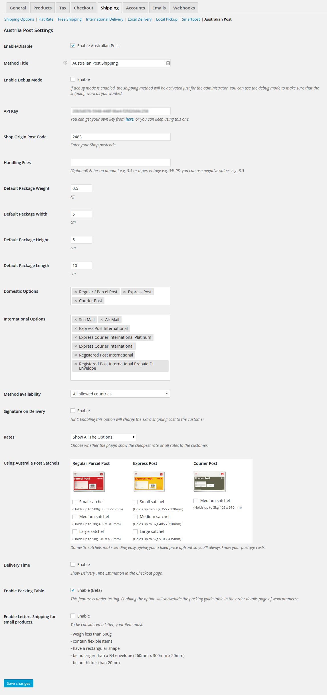

Overview
Australia Post WooCommerce Extension is a WordPress Plugin that integrate the Australian Post service, it will calculate the shipping cost and the delivery time for your customer.
Installation
Using The WordPress Dashboard
- Navigate to the 'Add New' in the plugins dashboard
- Search for 'Australia Post WooCommerce Extension'
- Click 'Install Now'
- Activate the plugin on the Plugin dashboard
Uploading in WordPress Dashboard
- Download the plugin zip file from here
- Navigate to the 'Add New' in the plugins dashboard
- Navigate to the 'Upload' area
- Select australia-post-woocommerce-extension.zip from your computer
- Click 'Install Now'
- Activate the plugin in the Plugin dashboard
Using FTP
- Download australian-post-woocommerce-extension.zip
- Extract the australian-post-woocommerce-extension directory to your computer
- Upload the australian-post-woocommerce-extension directory to the /wp-content/plugins/ directory
- Activate the plugin in the Plugin dashboard
Settings

WooCommerce Australia Post Extension comes with several settings to make you take full control of the plugin.
- Once the plugin has been activated, go to WooCommerce > Settings > Shipping.
The method will be listed at the top of the screen, underneath the tabs. Click on ‘Australian Post’
- Enable/Disable Choose whether to enable the shipping method of not.
- Method Title Name the shipping method. This will be visibile by customers.
- API Key Get this from Australia Post or leave it to use our API Key.
- Shop Origin Post Code This should be set to the postcode from which you will ship. It is sent to the Australia Post API.
- Handling Fees* If you carge handling fees, you can add it from here either by adding a fixed number or a percentage (e.g. 2.5 or 2%)
- Tax Status Choose whether the plugin should calcualate the shipping rate with taxes or not.
- Default Package WeightThe default weight of the package, If you didn't set the weight in the `Add New Product` page. This weight will be used to calculate the shipping fees.
- Default Package Width The default width of the package, If you didn't set the width in the `Add New Product` page. This width will be used to calculate the shipping fees.
- Default Package Height The default height of the package, If you didn't set the height in the `Add New Product` page. This height will be used to calculate the shipping fees.
- Default Package Length The default length of the package, If you didn't set the length in the `Add New Product` page. This length will be used to calculate the shipping fees.
- Domestic Options * Australia Post has three options to ship inside Australia, you can enable or disable these options as you want.
- International Options* Australia Post has a lot of options to ship outside Australia, you can enable or disable these options as you want.
- Method availability* If you want to restrict the use of Australia Post shipping to a specific countries, use this option.
- Signature on Delivery* If you want to charge the buyer the cost of (Signature on Delivery) service, you can enable it from this option.
- Rates* Choose to return all rates (user will get the choice) or just the cheapest rate.
- * PRO feature
Support
Do you have any problem? Did you encounter a bug in the plugin? Do you need a new feature to be included in the plugin? Do you feel talking about coffee or how the dinosaurs got extinct? - I'm serious -. Do NOT hesitate dropping me a support ticket.